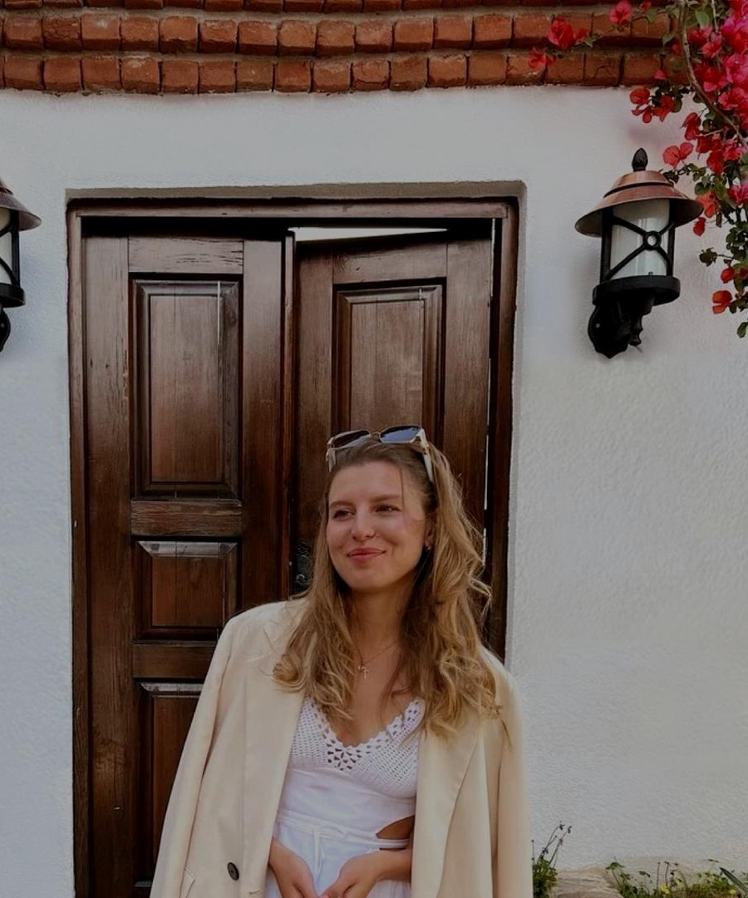
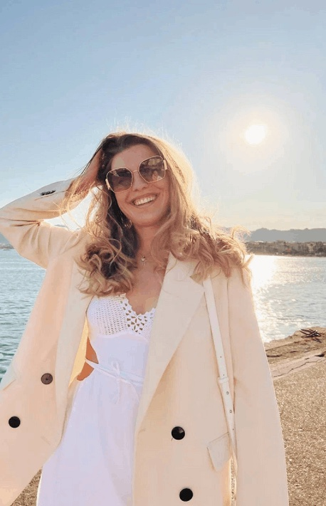
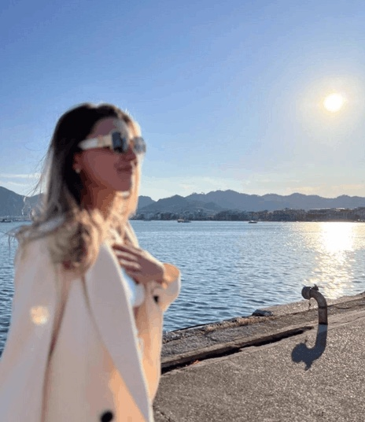

Индивидуальная консультация
3 500 ₽
Записаться
гештальт-подходонлайн
практикующий психолог, гештальт-терапевт
Ваше время для себя…
Записаться на консультацию200+
часов индивидуальной практики
160+
часов личной терапии
100+
групповой терапии
01 запросы
запросы, с которыми работаю

Индивидуальная работа со мной — это перезагрузка.
Своим клиентам я помогаю открыть и укрепить собственные опоры, восстановить контакт с телом, проживать сложные эмоции, принимать свои особенности и вносить изменения в свою жизнь.
02 работа со мной
услуги

3 500 ₽
ЗаписатьсяFAQ
ответы на вопросы
Вы выбираете удобное для себя время. Встреча проходит по видеосвязи в Телеграм, Skype или Zoom. Вам необходимо найти тихое уединённое место.
Всё зависит от вашего запроса. Иногда достаточно 2–3 встреч, иногда требуется долгосрочная работа. Средняя длительность терапии, после которой ярко виден результат, — 8–10 сессий. Частота встреч также определяется индивидуально, обычно это 1 раз в неделю, но возможны варианты: 2 раза в неделю, 2 раза в месяц, разово по запросу.
Абсолютно нормально, если вы не можете сразу сформировать запрос. Часть моей работы заключается в том, чтобы помочь вам это сделать.
Психотерапия — это инвестиция в своё благополучие, слово за Вами
инвестицию в себя начни уже сегодня
Записаться на консультацию